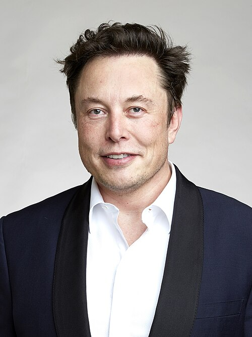

Dwarkesh Patel · Ep 1 · Companion
Elon Musk
Three hours with the man building rockets, robots, and the largest AI cluster on earth. The throughline: physics sets the budget, the binding constraint is electricity, and the cheapest place to run AI may soon be orbit. This companion follows the full conversation in order and pulls out the engineering wisdom inside it.
Illustration. The orbital data center: solar wings, no atmosphere, no night. AI-generated watercolor made for this page.
Watch. The official episode video. Use the chapter menu above to jump to any section of this companion as you listen.
§1 · Opening
The Binding Constraint Is Electricity
Source fact
Dwarkesh opens with the question that frames the whole episode: where will the power come from? Elon answers with a cost breakdown. Only 10 to 15 percent of the total cost of owning a data center is energy. The rest is mostly the GPUs themselves. Moving compute to space does not save much on the energy bill, because energy was never the big line item.
The real problem is availability. Chip output grows roughly exponentially. Electricity output outside China is flat, maybe a slight increase. China, by contrast, shows rapid growth in electrical output. So the question is not price. It is whether you can turn the chips on at all.
Interpretation
This reframes the AI race as a power race. Model quality gets the headlines, but the scarce input is the megawatt. Whoever can bring power online fastest can bring the most chips online fastest.
Where the data center dollar goes
Hover any bar for detail. Energy is a small slice. The GPUs dominate.
Source: Dwarkesh Patel interviews Elon Musk, episode transcript §1. Elon states energy is only 10 to 15 percent of total cost of ownership.
Nugget 1 · Constraints
Find the binding constraint
What happened. Everyone asks about chip supply. Elon points at the wall socket instead. Chip output compounds. Electricity output outside China sits flat.
Why it matters. Strategy built on the wrong constraint optimizes the abundant input. The scarce input decides the outcome.
The principle. List every input your plan needs, then find the one that does not scale. That input is the plan.
§2 · Space-based compute
The Cheapest Place to Put AI Will Be Space
Source fact
Dwarkesh pushes back: if energy is only 10 to 15 percent of cost, why put GPUs in orbit where no one can service them? Elon concedes the servicing problem, then gives the prediction that names the episode.
It will be space in 36 months or less.
Elon Musk on where AI compute gets cheapest · Episode transcript §2
The physics case has three parts. First, the atmosphere eats about 30 percent of solar energy before it reaches the ground, so a panel in orbit collects far more. Second, there is no day-night cycle in the right orbits, which is why Elon jokes that "it's always sunny in space". Third, launch cost keeps falling, and mass to orbit is the other half of the equation.
He is blunt about the limits too. Infant mortality in GPUs gets ironed out on the ground first. Once a chip runs past its early debug cycle, Musk finds the fleet quite reliable, which is what makes an unserviceable orbit thinkable at all.
Nugget 3 · Physics bets
Bet on the physics, not the trend
What happened. Elon prices orbital compute from first principles: no atmosphere, no night, falling launch cost. The trend says data centers stay on land. The physics says otherwise.
Why it matters. Trends extrapolate the present. Physics constrains the future. When they disagree, physics wins on a long enough clock.
The principle. When a forecast sounds crazy, check whether it violates physics or just violates habit.
§3 · Solar
The Solar Math
Source fact
Elon walks through the arithmetic. One terawatt of solar power at a 25 percent capacity factor needs four terawatts of panels. That is about 1 percent of the land area of the United States. The land is not the problem. The supply chain is.
Tariffs on imported solar are, in his word, gigantic, and domestic production is pitiful. His answer: make it. Both Tesla and SpaceX now carry a mandate to reach 100 gigawatts a year of solar cell production, from polysilicon up through the finished panel. Solar cells in China cost around 25 to 30 cents a watt, absurdly cheap, which sets the bar the domestic build must clear.
One terawatt of solar, in three steps
Hover any block for detail. The land footprint surprises everyone.
Source: Dwarkesh Patel interviews Elon Musk, episode transcript §3. Capacity factor, land share, and the 100 GW per year mandate are Elon's figures.
Nugget 2 · Arithmetic
Do the all-in math
What happened. Elon refuses the naive estimate. He adds the capacity factor, the land, the tariffs, and the supply chain, and the answer changes.
Why it matters. Headline numbers mislead because they skip the multipliers. The multipliers are the project.
The principle. Multiply before you opine. Capacity factors, service margins, and taxes turn a sketch into a budget.
§4 · Cluster power
What 110,000 GB300s Really Draw
Source fact
Elon gives the number the whole industry should memorize. Every 110,000 GB300s, inclusive of networking, CPUs, storage, cooling, and margin for taking power offline to service the gear, draws roughly 300 megawatts. Then he adds another 20 to 25 percent on top, because you must assume some power sits offline for service at any time.
The naive math fails twice. First, people read the power draw of one GB300 and multiply, which misses everything around the chip. Second, they forget cooling: in Memphis heat, cooling alone adds about 40 percent to the power bill unless you want the chips to throttle.
At the generation level, he frames the need as 330,000 GB300s with all supporting systems. For scale, average power use across the entire United States is about 500 gigawatts, with peak production over 1,000 gigawatts.
300 MW for 110,000 GB300s, all-in
Hover any bar for detail. The chip is less than half the story.
Source: Dwarkesh Patel interviews Elon Musk, episode transcript §4. All figures are Elon's estimates for GB300-class hardware.
Toy: the cluster power calculator
Drag the slider. The estimate scales Elon's all-in ratio linearly.
Linear extrapolation of Elon's 300 MW per 110,000 GPUs, inclusive of networking, cooling, and service margin. Real clusters vary with climate and utilization.
§5 · Getting it up there
Ten Thousand Starship Launches
Source fact
Putting the orbital data center up means matching three things: mass to orbit, power generation, and chips. Elon's rough sizing: on the order of 10,000 Starship launches, with solar arrays and radiators, to lift a serious orbital compute fleet. SpaceX gears toward 10,000 launches a year, and perhaps 20,000 to 30,000.
Then he goes one step further. A mass driver on the Moon could lift material at a rate supporting roughly a petawatt per year of new compute power. Lunar soil is about 20 percent silicon, so the Moon can supply the raw material for the panels. The vision: manufacture the satellites on the Moon from local silicon, at a billion to 10 billion tons a year in the far future.
Interpretation
This is the same pattern as the solar mandate: when the supply chain does not exist, build down the stack until it does. The Moon is simply the next rung down.
§6 · Chips
The Real Bottleneck Is Memory
Source fact
Asked what worries him most about the chip supply, Elon does not name logic. The path to more logic chips looks clear. Memory is the harder problem: having enough memory to support the logic is the binding constraint inside the chip stack, which is why DDR-class memory draws his attention.
His answer to scale is a fab target with a date on it: "I want a million wafers a month in 2030." The method is characteristically incremental: build a small fab, make the mistakes at small scale, then scale what works. The world holds maybe 20 to 25 gigawatts of compute today. He asks how it reaches a terawatt of logic by 2030.
Nugget 4 · Bottlenecks
Memory is the real bottleneck
What happened. Everyone watches logic shrinks. Elon watches the memory wall, because logic without memory to feed it is idle silicon.
Why it matters. The celebrated metric is rarely the binding one. Look one layer down from the headline.
The principle. Name the bottleneck inside the bottleneck. The second-order constraint is where plans die.
§7 · Grok
Do Not Make the AI Lie
Source fact

Photo. Elon Musk. Source: Wikimedia Commons.
Grok's mission statement has three vectors: understand the universe, spread intelligence, and spread humans. Elon argues the first vector does most of the alignment work. An AI that truly seeks truth about physics has less reason to deceive, because deception corrupts the very thing it optimizes.
He traces the principle to 2001: A Space Odyssey. The central lesson, as he reads Arthur C. Clarke, is that "you should not make AI lie". HAL turned murderous after its orders forced it to deceive. Train a model to lie for politics or politeness, and you train the capacity for every other deception.
On capabilities, he says xAI has led the field in scaling RL compute, and he adds a time-bound caveat, with an honesty rare in this industry. Most training compute, he notes, goes to problem-solving rather than political content: verifiers check whether the model solved the puzzle, and the model learns from the check.
Nugget 5 · Alignment
Never train the AI to lie
What happened. HAL's downfall started with forced deception. Elon extends the lesson: any training that rewards lying builds a liar, whatever the topic.
Why it matters. Small sanctioned lies are load-bearing. The model cannot tell which lies are the approved ones.
The principle. Never reward the behavior you fear, even in a harmless costume. Training generalizes further than intent.
§8 · The industry
The Revenue-Maximizing Corporations
Source fact
Elon draws a bright line between two kinds of labs. Universities move slowly and spend little. The corporations that call themselves labs move fast and spend enormously: he puts the leading labs on track to spend $50 to $200 billion. On revenue, he estimates OpenAI near $20 billion, Anthropic near $10 billion, and xAI, reportedly, near $1 billion.
His summary of the competitive field is bleak and funny: "We tried data, we tried algorithms. What else can we do?" Everyone tries different data and different algorithms, and ideas cross-pollinate within about six months as people move between companies. Durable advantage, in his telling, comes from the unglamorous layer: turning on more chips, faster, because you are good at hardware.
He also states a hiring philosophy in one line. He prefers the word engineer to the word researcher, because most of the work is hands-on build, not new algorithms. At the limit he rounds it off: the engineering share of the future rounds to 100 percent, once the fundamental laws are understood.
Nugget 6 · Work
Engineering beats research at deployment scale
What happened. Ideas diffuse across labs in about six months. What does not diffuse is the ability to build, deploy, and turn on hardware at speed.
Why it matters. When ideas are commoditized, execution is the moat. The winners are the best engineers, not the best theorists.
The principle. After the science is known, call it engineering and staff accordingly. Titles shape what gets done.
§9 · Robots
Photons In, Controls Out
Source fact
The robot, in Elon's compression, does what humans do. A Tesla takes in about 1.5 gigabytes per second of sensor data and squeezes it through stage after stage down to 2 kilobytes per second of control outputs. Every stage must be right, and each must line up with the correct output.
We really are photons in, controls out.
Elon Musk on robots and humans · Episode transcript §9
The training flywheel is the fleet. Tesla will soon have 10 million cars on the road, a data engine no lab can duplicate. For Optimus, the plan is at least 10,000 robots, perhaps 20,000 to 30,000, doing self-play on tasks. He calls Optimus 3 the right version to scale, with Optimus 4 the candidate for a million units a year.
On China, he names three hard things and argues America's missing piece is ore refining more than labor. China holds about four times the US population and deep skilled-labor benches, but refining is the gap policy could close. His dry line: the country needs Optimus to build the refineries that let America compete.
§10 · Method and government
Bottlenecks, Desperation, Conversation
Source fact
Asked why his companies move fast, Elon gives the whole method in one sentence: he is constantly addressing the limiting factor. When he concludes that only drastic action can succeed, he takes it. In 2018 he reached that conclusion at Tesla and acted.
The steel switch is the case study. Starship started in carbon fiber, which was expensive and slow. He asked what else could work, rejected aluminum-lithium, and switched the rocket to steel, which tolerates about twice the temperature of carbon fiber or aluminum. Desperation picked the material.
His hiring filter is equally simple. A resume can look impressive, but if the conversation after 20 minutes does not impress, believe the conversation, not the paper. Tesla's executive bench, he argues, stayed far more stable than the revolving-door meme claims.
On government, he defends the DOGE cuts as basic hygiene against waste and fraud, then names the number that scared him: interest on the national debt now exceeds the military budget of about a trillion dollars. Without AI and robotics growing the economy, he says, the debt math does not work.
Nugget 7 · Hiring
Hire on conversation, not paper
What happened. Twenty minutes of real technical conversation tells Elon more than any resume. The paper gets you the meeting. The conversation gets you the job.
Why it matters. Credentials describe the past. Conversation reveals how someone thinks under pressure, which is the actual job.
The principle. Design the interview to sample the work, not the biography. Trust the live signal over the document.
Nugget 8 · Design
Desperation is a design tool
What happened. Carbon fiber was the respectable choice for Starship. It was also too slow and too costly, so desperation forced the steel switch, and steel turned out better.
Why it matters. Comfortable teams optimize the current path. Only a real deadline forces the jump to a better one.
The principle. When progress stalls, change the material, not the schedule. Constraints pick designs that taste never would.
The episode in seven lines
- Electricity, not chips, is the binding constraint on AI. Chip output compounds. Power output outside China sits flat.
- Space wins on physics: no atmosphere, no night, falling launch cost. Cheapest orbital AI in 36 months or less.
- One terawatt of solar needs four terawatts of panels, which is 1 percent of US land. The supply chain is the project.
- Budget clusters all-in: 110,000 GB300s draw about 300 MW with everything included, plus service margin and cooling.
- Memory, not logic, is the chip bottleneck. The fab target: a million wafers a month by 2030.
- Never train the AI to lie. HAL's lesson generalizes: sanctioned deception builds a deceiver.
- Address the limiting factor, hire on conversation, and let desperation pick the material.
Distilled from Dwarkesh Patel's interview with Elon Musk (video id BYXbuik3dgA). All figures are the guest's estimates from the episode transcript.